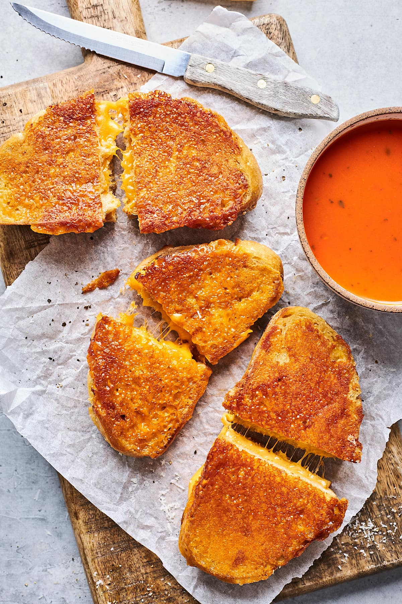

This is a classic grilled cheese sandwich served with a warm bowl of tomato soup.
Spread butter on one side of each slice of bread.
Place cheese between the two slices of bread.
Heat a skillet over medium heat and place the sandwich in the skillet.
Cook for 3-4 minutes on each side until golden brown and the cheese is melted.
Serve hot with tomato soup.
Calories: 400kcal, Carbohydrates: 30g, Protein: 15g, Fat: 25g,
Saturated Fat: 15g, Polyunsaturated Fat: 5g, Monounsaturated Fat: 5g,
Trans Fat: 0.5g, Cholesterol: 50mg, Sodium: 600mg, Potassium: 200mg,
Fiber: 2g, Sugar: 5g, Vitamin A: 500IU, Vitamin C: 5mg, Calcium: 200mg, Iron: 2mg
Over medium heat, pour olive oil into an oven safe dutch oven and allow oil to warm.
Combine shallots and onion and saute for 5 minutes, then add thyme, garlic, salt, and pepper
and cook for an additional 2-3 minutes, until fragrant.
Remove from the heat and add heirloom tomatoes.
Cover with a lid and put into oven to roast for 25-30 minutes at 375 degrees F.
Once removed from the oven, the tomatoes should be soft and juicy if pressed.
Add everything into a blender along with the fresh basil leaves and blend until smooth.
Pour mixture back into the dutch oven over low heat and add coconut milk and pesto,
mix together until fully incorporated. Bring to a simmer and cook undercovered for 25 minutes,
stirring occasionally. Add parmesan cheese and generously season with salt and pepper,
taste and adjust as needed.
Calories: 570kcal, Carbohydrates: 39g, Protein: 17g, Fat: 40g, Saturated Fat: 16g,
Polyunsaturated Fat: 3g, Monounsaturated Fat: 16g, Cholesterol: 18mg, Sodium: 771mg,
Potassium: 814mg, Fiber: 6g, Sugar: 13g, Vitamin A: 2420IU, Vitamin C: 38mg,
Calcium: 390mg, Iron: 4mg